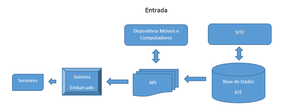
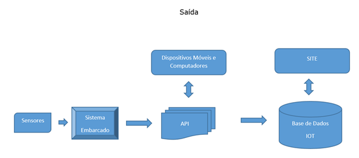

Definições¶
Dispositivo¶
É representado pelo conjunto de aparelhos ou mecanismos que possuam capacidade de integração e comunicação via API com a base de dados IOT, bem como realizar a comunicação e processamento com os recursos de entrada/saída.
Recurso¶
É representado pelo conjunto de recursos de entrada/saída que possuam capacidade de integração e comunicação com dispositivo.
Recurso de Entrada¶
É representado pelo conjunto de recursos que recebem informações da base de dados IOT.
Dica
Tipos de Recursos de Entrada.
- Relé.
- Sirene.
Recurso de Saída¶
É representado pelo conjunto de recursos que enviam informações para a base de dados IOT.
Dica
Tipos de Recursos de Saída.
- Temperatura.
- Umidade.
- Distância
Fluxo de Entrada e Saída¶
Fluxo de Entrada
Um recurso de entrada recebe informações da base de dados IOT através da API. Em geral estes recursos são conectados a dispositivos que necessitam de algum estímulo para serem ativados.
Dica
Mundo Real. Sistema embarcado recebe ordem para ativação de um relé. Este relé poderá acionar um equipamento elétrico associado a este, tais como :
- Motor,
- Lâmpada,
- Sirene,
- Tomada etc.
Fluxo de Saída
Um recurso de saída envia informações para a base de dados IOT através da API. Em geral estes recursos são conectados a dispositivos que informam ou reportam dados concretos que representam alguma coisa no mundo real.
Dica
Mundo Real. Sistema embarcado fornece dados de temperatura e umidade do ambiente. Dados são armazenados, parametrizados e disponibilizados para acesso a usu⳩os com permiss䯮
- Temperatura,
- Umidade,
- Distância,
- Luminosidade etc.
Tipos de Recurso¶
Define o tipo associado ao recurso, que poderá ser de Entrada ou Saída.
Subtipos de Recurso¶
Define o Subtipo associado ao recurso de acordo com o seu tipo.
Dica
Recurso do tipo Entrada teremos os subtipos.
- Binário,
- Dado Bruto,
- Digital, etc.
Dica
Recurso do tipo Saída teremos os subtipos.
- Estado,
- Unidade,
- Dado Bruto, etc.
Métrica¶
Define a forma (label) de como o Feed será apresentado na opção Gerenciar Feed. Esta forma de apresentação tem a relação direta com o Tipo e Subtipo de Recurso.
Dica
Exemplo de Métrica para Tipo Entrada e Subtipo Binário
- Para o valor do Feed 0 cadastrar na métrica Desligado será apresentado o label Desligado em Gerenciar Feed.
- Para o valor do Feed 1 cadastrar na métrica Ligado será apresentado o label Ligado em Gerenciar Feed.
Dica
Exemplo de Métrica para Tipo Saída e Subtipo Estado
- Para o valor do Feed 0 cadastrar na métrica Vazio será apresentado o label Vazio em Gerenciar Feed.
- Para o valor do Feed 1 cadastrar na métrica Metade será apresentado o label Metade em Gerenciar Feed.
- Para o valor do Feed 2 cadastrar na métrica Cheio será apresentado o label Cheio em Gerenciar Feed.